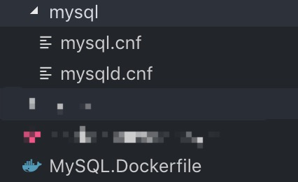

我是一个java程序猿, 当前已经转为nodejs开发, 因为工作需要接触docker到目前为止已经有一年多的时间了, 一下是我学习和使用docker的一些总结.
前言
认识docker
Docker是一个容器平台, 可以说他是一个虚拟机平台, 但是它又比虚拟机强大. Docker是开发人员和系统管理员使用容器开发，部署和运行应用程序的平台。
使用Linux容器部署应用程序称为容器化。容器不是新的，但它们用于轻松部署应用程序。
docker能解决什么问题
- 生产开发环境不一致的问题
基本概念
- 容器
- 镜像
- 仓库
安装
# 查看docker版本
docker --version
# 查看docker信息
docker info
# 测试docker是否安装成功
docker run hello-world
Unable to find image 'hello-world:latest' locally
latest: Pulling from library/hello-world
ca4f61b1923c: Pull complete
Digest: sha256:ca0eeb6fb05351dfc8759c20733c91def84cb8007aa89a5bf606bc8b315b9fc7
Status: Downloaded newer image for hello-world:latest
Hello from Docker!
This message shows that your installation appears to be working correctly.
...入门
前提条件: 安装好Docker
容器
创建Dockerfile文件
在项目根目录下创建一个Dockerfile文件, 如:
# 将官方 node:9.3.0-alpine 运行时用作父镜像
FROM node:9.3.0-alpine
RUN mkdir -p /app
# 将工作目录设置为 /app
WORKDIR /app
# 将当前目录内容复制到位于 /app 中的容器中
COPY . /app/temp
RUN cp /app/temp/package.json /app/package.json &&\
npm install --registry=https://registry.npm.taobao.org &&\
cp -r /app/temp/pages /app/pages &&\
cp -r /app/temp/components /app/components &&\
cp -r /app/temp/next.config.js /app/next.config.js &&\
rm -rf /app/temp
# 在容器启动时运行
CMD ["npm", "start"]有关Dockerfile的命令可以参考这里编写Dockerfile的最佳实践
构建镜像
命令:
docker build -t <image-name> .;
-t image-name 是给镜像添加名称
. 代表当前根目录
可选参数 -f Dockerfile-name 指定Dockerfile文件, 默认是 Dockerfile, 当我们有如: MYSQL.Dockerfile 则可以使用该参数指定 例:docker build -t imagename . -f MySQL.Dockerfile
运行容器
命令:
docker run -d -p 3000:3000 --name <容器名称> <镜像hashid/镜像名称>
- -d 参数指定容器在后台运行
- -p 指定容器端口映射, 主机端口:容器端口, 容器端口指容器内部服务对外暴露的端口,如果tomcat对外提供服务的端口为8080
- –name 参数设置容器名称
- 最后接对应的镜像 hashid 或者 镜像名称:tag
其他常用参数:
- –network 指定容器运行的网络环境
- -v 配置容器数据卷, 更多信息参考 高级篇[容器数据]
- –rm 该命令常常与 -v 一起使用, 在删除/停止容器的时候同事清除数据卷映射关系
- –link 链接到其他容器, 新版本推荐使用 –network 指定容器网络环境即可
容器镜像操作:
docker ps; #查看当前运行的容器
docker ps -a; # 查看所有的容器
docker logs <镜像hashid/镜像名称> # 查看指定容器的日记
docker start <容器hashid/容器名称> # 启动容器
docker stop <容器hashid/容器名称> # 停止容器
docker stop -f <镜像hashid/镜像名称> # 停止容器, 同时删除容器
docker rm <容器hashid/容器名称>... # 删除容器, 可以同时指定多个 <容器hashid/容器名称>
docker rmi <镜像hashid/镜像名称> # 删除镜像, 必须注意的是, 先删除容器才能删除镜像推送镜像到仓库
- 登陆docker仓库
docker login ... - 给镜像打标签
docker tag [本地镜像名称]:[版本号] [存储库名称]:[版本号] - 推送到镜像仓库
docker push [账号名]/[存储库名称]:[版本号] - 尝试拉取镜像
docker pull [账号名]/[存储库名称]:[版本号]
案例
# 登陆dockerhub
docker login
# 构建镜像
docker build -t arm64v8/myblog:latest .
# 将本地镜像打标签
docker tag arm64v8/myblog:latest jiangzwyz/myblog:latest
# 推送到镜像仓库
docker push jiangzwyz/myblog:latest服务Swarms
待补充
高级篇
容器数据
深入了解docker的都会知道docker的方便,但是也会明白docker的缺点,就是容器在被销毁时,其内部的数据将会全部丢失,那么这里我们就将解决这个问题
最常见的案例就是数据库了, 这里我们以配置 mysql容器为例, 示范如何使用数据卷将容器的数据保存到主机上.
Dockerfile文件:
# 拉取 mysql:5.7 官方镜像
FROM mysql:5.7
# 设置时区 Shanghai
RUN cp /usr/share/zoneinfo/PRC /etc/localtime
# ENV 设置 镜像环境变量 mysql 镜像参考官方说明,可以在此配置账户密码
ENV MYSQL_ROOT_PASSWORD=you_password
ENV MYSQL_USER=you_name
ENV MYSQL_PASSWORD=you_passowrd
# 这里我使用了自定义mysql的配置文件
COPY ./mysql/mysql.cnf /etc/mysql/conf.d/mysql.cnf
COPY ./mysql/mysqld.cnf /etc/mysql/mysql.conf.d/mysqld.cnf重点在这里
docker build -t mysql . -f MYSQL.Dockerfile;
docker run -d -p 3306:3306 --rm -v /mysql/db:/var/lib/mysql --name mysql mysql;从当前项目中构建mysql镜像, 然后运行容器时指定主机/mysql/db目录挂载到容器/var/lib/mysql目录(此目录是mysql数据库文件所在)
数据类的容器,官方都会说明其数据文件存放的位置, 当然我们也可以挂载网盘到容器中.

容器网络
使用容器,你就不应该再去管理烦人的IP
我们载部署项目的时候经常会遇到这个问题, 我们的项目需要连接mysql, 一般我们通过ip去连接*(localhost:3306、127.0.0.1:3306), 这样到还简单,如果我们的mysql IP是动态的, 怎么办? 你改的几次就会抓狂的. 所以我们需要使用到 容器网络 network
在Docker中建立 自定义 桥网络
- 连接到默认bridge网络的容器可以通过IP地址相互通信。Docker不支持默认网桥上的自动服务发现。如果希望容器能够按容器名称解析IP地址，则应使用用户定义的网络。您可以使用旧版docker run –link选项将两个容器链接在一起，但在大多数情况下不建议这样做。
- 使用自定义 bridge网络 运行在其中的容器可以发现对方
- 要实现 容器间通讯，采用 自定义 桥网络 （容器必须在同一主机中）
- network 桥网络，容器运行再 用户自定义桥网络 中，容器间可以通过 局域网访问（不适用于分布式主机），默认桥网络不支持这样
# 查看当前主机中网络列表
$ docker network ls
# 创建 桥网络
$ docker network create --driver bridge [network-name]
# 将容器运行在对应的 bridge网络 中，使用 --network=[network-name]
$ docker run -d -p 80:80 -p 443:443 --network=[network-name] --name mynginx [container-images-id]
$ docker run -d -p 80:80 -p 443:443 --rm -v ~/../workspace/myimages/images:/app/images &&\
--network=[network-name] & --name=1.2.3.4 [container-images-id]在同一个 network 网络中的两个容器之间通信可以直接使用 容器名称:端口 的方式去访问,
如: mysql:3306
k8s
容器编排
其他
设置容器时区
时区问题一直都是我们需要解决的问题, 容器同样避免不了这个问题.
在linux中, 我们可以将本地时间文件拷贝到/etc/localtime即可设置容器时间
linux的时区设置文件在 /usr/share/zoneinfo/Asia
我们将设置系统时间为 上海 例:
# 在Dockerfile中添加:
# linux版本: node:9.3.0-alpine
RUN apk add --no-cache tzdata && \
cp /usr/share/zoneinfo/Asia/Shanghai /etc/localtime && echo "Asia/Shanghai" > /etc/timezone && \
apk del tzdata
# 镜像 mysql:5.7
RUN cp /usr/share/zoneinfo/PRC /etc/localtime上海时区/usr/share/zoneinfo/Asia/Shanghai实际上是链接到/usr/share/zoneinfo/PRC时区, 所以在第二个中我们的做法也是可取的.
结语
官方文档是最好的学习资料